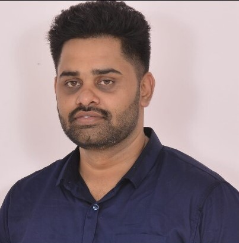

Ragavendren V

Lead Engineer


Objectives
Results-driven Technical Lead with extensive experience in full stack development and managing teams.
Seeking a challenging role to leverage my technical expertise and leadership skills in overseeing and
coordinating the development of scalable web applications. Excited to contribute to a dynamic organization
and mentor a team, while implementing advanced technologies
Skills
- React Js
- Node Js
- Express Js
- Mongo DB
- html
- css
- postgreSql
- AWS
Work Experience
Technical Lead
Think & Learn (Byjus) (03/2021 - 08/2023)
-
Led a team of 10 developers in designing, developing, and maintaining highly scalable web applications
using the MERN stack.
-
Collaborated with cross-functional teams to design and implement scalable web applications using
React.js and Node.js.
-
Collaborated with business and platform to gather requirements and converting into technical tasks.
Worked on Aws cloud.
-
Collaborated with cross-functional teams, including designers, testers, and DevOps, to ensure seamless
integration and delivery of projects.
-
Managed project timelines, resource allocation, and task assignments to ensure efficient project
execution and on-time delivery.
-
Conducted code reviews and performed thorough testing to ensure code quality, scalability, and
performance.
Associate Consultant
Hcl Technologies (01/2016 - 02/2021)
-
Developed the system using React to manage users and their profiles which includes their access and
hierarchy management.
-
Architected and implemented RESTful APIs and microservices to facilitate modular and maintainable
codebase using Node.
-
Actively participated in technical discussions and decision-making processes to drive innovation and
continuous improvement.
-
Designed robust disaster recovery strategies which includes backup and recovery plans for critical
systems and applications.
System Engineer
Tata consultancy Services (10/2012 - 12/2015)
- Disaster recovery planning and implementation of servers and DBs.
- Configuring backup for File system/SQL/Exchange/EVault/VM/Flash backup.
- Restoring/Recovering data as per user request (SQL/Exchange/VM/Flash).
Projects
-
Student Management System - To handle students order fulfillment and manage their enrollments.
- skills: Reactjs, nodeJs, MongoDB, Express Js, AWS, EKS, SQL,ECS
-
User Management System - : User onboarding, access management, authorizations and team hierarchy.
- skills: Reactjs, nodeJs, MongoDB, Express Js, AWS, EKS, SQL,ECS